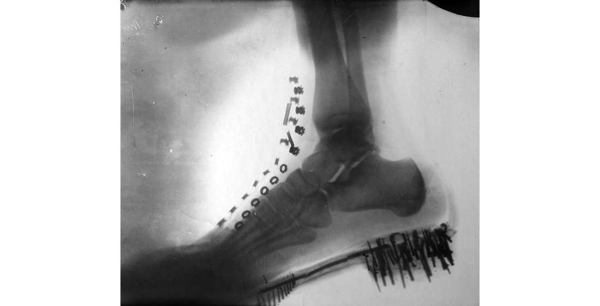

Во многом наш электрический мир своим нынешним технологическим состоянием обязан ученому из Сербии. За годы своей бурной изобретательской деятельности он получил более 300 патентов, разработал двигатели переменного тока, подтолкнувшие промышленную революцию, и немного не дожил до признания своего вклада в открытие радио.
Никола Тесла родился 10 июля 1856 года в деревушке Смилян (приграничный район тогдашней Австрийской империи) в семье местного приходского священника. Отец надеялся, что парень продолжит его трудовую карьеру, однако с самого детства Николу интересовало совсем другое. Сперва он мастерил рогатки и занимался всеми шалостями, присущими детям. Тесла был левшой, но в школе его, конечно же, переучили. Однако гений впоследствии одинаково хорошо управлялся обеими руками.
Такой Тесла стоит нынче в деревеньке Смилян
До конца жизни Тесла вспоминал, как впервые познакомился с электричеством. В возрасте шести лет его главным другом был черный кот, вместе с которым они противостояли дворовому гусю. Однажды Никола игрался с котом в вечерних сумерках. Мальчик гладил животное по спине, когда «кошачья спина окуталась легким голубым сиянием», а от прикосновений появлялся целый сноп искр. Факт того, что это электричество, живущее в устрашающих молниях, поразил Теслу до глубины души.
Позже его семья переехала из деревни в город, а сам Никола стал ходить в среднюю школу. В своей автобиографии относительно этого периода жизни он писал о своих едва ли не сверхъестественных способностях, которые помогали ему решать математические и физические задачки. В голове Теслы словно возникала доска с описанием задачи, а за ним появлялось и ее решение. А потому на вопросы учителя он отвечал устно спустя минуту-другую. Даже не успевал записать решение. К тому же ученого до глубокой старости сопровождали «световые явления», которые возникали в его голове в моменты озарения новыми идеями.
Сказать, что Тесла был странным — не сказать ничего. Он терпеть не мог женские серьги, один вид жемчужины был для него оскорбительным, а при взгляде на персик его бросало в жар. Со временем во взрослом возрасте к этим странностям добавлялись новые. Взглянув однажды на микробов под микроскопом, Никола приобрел привычку заказывать в ресторанах по 18 салфеток, чтобы лично протирать все приборы. Муха, севшая в процессе обеда на стол, могла вынудить Теслу и его спутников пересесть за новый.
Ко всему этому изобретатель был крайне эрудированным полиглотом. У него была фотографическая память, он наизусть цитировал «Фауста» Гёте и разговаривал на восьми языках: сербско-хорватском, чешском, английском, французском, немецком, венгерском, итальянском и латинском. Несмотря на то что юный Никола был зубрилой, асоциальным типом назвать его было сложно. В студенческие годы будущий ученый подсел на азартные игры: бильярд, шахматы и карты. За игровым столом Тесла мог проводить по несколько суток без перерыва. Такую же работоспособность он проявлял и позже, трудясь в своих лабораториях.
Схема на песке
Тесла придумал, как на практике использовать вращающееся магнитное поле. Это случилось в 1882 году во время прогулки по Будапешту и цитирования «Фауста» Гёте. До этого на протяжении нескольких месяцев ученого мучила странная болезнь, природой которой, скорее всего, являлось крайнее истощение организма ввиду переутомления. «Муха, садившаяся на стол в комнате, порождала в моем ухе глухой звук, напоминавший падение тяжелого тела», — писал изобретатель в своей автобиографии. Лишь прогулки и занятия гимнастикой под надзором приятеля помогли ученому выкарабкаться из затуманенного состояния.
Снимок носит иллюстративный характер. Скорее всего, на нем изображен не Тесла, а любвеобильный инструктор по плаванию
Во время одной из таких прогулок Николу в буквальном смысле озарило. В одно мгновение он понял, как будет работать его двигатель, и принялся чертить прямо на песке схему. Она изменила и судьбу самого Теслы, и мир, в котором мы живем.
AC/DC
В те годы улицы городов освещали газовыми фонарями либо электрическими дуговыми лампами. Ни первый, ни второй способ не подходил для света в замкнутых жилищах простых обывателей. Электрический свет пришел в дома только в 1879 году, когда Томас Эдисон усовершенствовал лампочку до коммерчески выгодных параметров.
Эдисон и его ламповое фото
В Нью-Йорк Тесла прибыл в 1884 году. До этого он несколько лет трудился в парижском региональном отделении компании Эдисона. В негласной столице США Никола продолжил более тесное сотрудничество со своим будущим соперником. Он пытался заговорить с «королем света» о преимуществах переменного тока, но Эдисон был непреклонен — будущее он видел за безопасным постоянным током.
Эдисон в 1870 и 1925 годах
Здесь стоит объяснить, что в США тех лет электростанции Томаса Эдисона передавали постоянный ток (DC) низкого напряжения. Но эффективной передача была только на короткие расстояние. Точнее, на очень короткие расстояния — до двух километров от генератора. Чем дальше шли провода, тем больше энергии терялось по пути, что с коммерческой стороны было крайне невыгодно.
Тесла же ратовал за переменный электрический ток (AC), который особо не зависел от протяженности проводов. Проблема была только в модулировании напряжения на входе и выходе с электрических проводов для подачи безопасного тока в жилища. Эту задачу решил инженер Уильям Стенли: генератор производит переменный ток низкого напряжения, трансформатор повышает напряжение до нужной величины, ток передают на огромное расстояние, а другой трансформатор уже понижает его.
В 1887 году, после ухода с фабрики Томаса Эдисона, Николе пришлось перебиваться трудом чернорабочего, пока он не встретил двух компаньонов, вместе с которыми организовал компанию «Тесла Электрик». Ученый получил собственную лабораторию.
Адепты переменного тока упирались в одну важную деталь — отсутствие надежных электродвигателей, которые могли бы крутить на заводах и фабриках различные станки. Лампочки в домах потребителей в данном случае выступали скорее как PR-компания всего электричества вместе взятого.
Такой трехфазный асинхронный двигатель находится в музее изобретателя в Сербии
Изобретатель работал над всей системой оборудования для передачи переменного тока сразу: генераторы, счетчики, трансформаторы. И над двигателями переменного тока. Мотор Теслы как раз использовал вращение электромагнитного поля. На полюса электродвигателя подавались два различных переменных тока, отличавшихся друг от друга сдвигом по фазе. Это и вызывало вращение магнитного поля. Оно увлекало за собой обмотку ротора. Никола принялся развивать идею двухфазного тока, отметив при этом, что количество фаз может быть и большим. В 1888 году он получил первые патенты на двигатели переменного тока.
Железнодорожный магнат Вестингауз
Разработка Теслы приглянулась магнату Джорджу Вестингаузу, который в пику Эдисону работал с освещением на переменном токе. Он выкупил патенты и нанял самого Николу на работу в качестве консультанта. С наработками выдающегося серба компания рванула вперед, испугав Эдисона, который развернул «черный пиар» против переменного тока. Результатом этого в некотором роде стало и создание электрического стула. На нем преступников казнили именно переменным током. Таким образом Эдисон пытался доказать его опасность.
Пожар
Разбогатев, Тесла перебрался в собственную лабораторию, где продолжал работать над самыми различными изобретениями. Так, в начале 90-х годов он демонстрировал изумленной публике лампу без нити накаливания, которая не была подсоединена ни к одному проводу, но все равно светилась. Это было подобие гейслеровской газоразрядной лампы, внесенной в переменное электромагнитное поле высокой частоты. Позже Тесла наполнит эти лампы люминоформами, сделав прообраз современных люминесцентных ламп. Эдисону конкурент его ламп накаливания не понравился. Он называл его мертвым белым светом, опасным для глаз.
Как искусный фехтовальщик, Тесла демонстрирует свои беспроводные лампы
13 марта 1895 года изобретателя постиг серьезный удар. Его лаборатория в Нью-Йорке на Пятой авеню полностью сгорела. Видимо, из-за короткого замыкания в здании начался пожар, который за несколько часов полностью уничтожил труды всей жизни Теслы: приборы, все экспериментальные установки, чертежи и документы, записи в дневниках инженера. Под натиском репортеров Никола держался достойно. Он заявил, что все удастся восстановить, кроме писем его близких.
Несмотря на феноменальную память Теслы, эти слова звучали скорее как бравада для журналистов. Частично восстановить наработки удалось бы, вот только для этого нужна была новая лаборатория. Сгоревшая же оценивалась в $250 тыс. И где достать такие деньги, Тесла не знал. Газеты называли пожар не личной потерей ученого, а трагедией для целого мира.
Дом не был застрахован, оборудование принадлежало «Вестингауз электрик», компании, которая многим была обязана Тесле. Никола практически спас ее основателя, когда в кризис отказался от своих патентных выплат: Вестингауз обязался платить по $2,5 за каждую проданную лошадиную силу его моторов. К 1905 году это были бы $17,5 млн. Но компания Вестингауза находилась в плачевном состоянии, и основатель поставил Теслу перед выбором: либо мы несем ваши моторы и переменный ток в мир, либо выплачиваем вам деньги и закрываемся. Утверждается, что изобретатель на глазах Вестингауза разорвал тот договор.

За внешним лоском скрывалось множество проблем
Когда же сам Тесла оказался в беде, сотрудники «Вестингауз электрик» выставили ему счет за уничтоженное оборудование и не предоставили никаких отсрочек по платежам за новое. Почему молчал сам основатель компании, непонятно.
Но Никола к тому времени был уже всемирно знаменит и получил меценатскую помощь от американского предпринимателя. Ему предлагали создать совместную компанию, доработать то же изобретение радио до коммерческого образца, однако изобретатель видел перспективы в работе над высокочастотным током. Биографы ученого называют это главной ошибкой Теслы, негативно повлиявшей на его жизнь.
Рентген
Тесла вполне мог претендовать и на открытие X-лучей, впервые о которых рассказал Вильгельм Конрад Рентген в 1895 году. Еще в 1887-м серб проводил опыты с электровакуумными трубками. Внося их в поле токов высокой частоты, Никола регистрировал два вида излучения: видимый свет и ультрафиолетовое излучение. Но были и совершенно особые лучи, которые оставляли на металлических экранах странные отпечатки.
Тесла вполне мог претендовать и на открытие X-лучей, впервые о которых рассказал Вильгельм Конрад Рентген в 1895 году. Еще в 1887-м серб проводил опыты с электровакуумными трубками. Внося их в поле токов высокой частоты, Никола регистрировал два вида излучения: видимый свет и ультрафиолетовое излучение. Но были и совершенно особые лучи, которые оставляли на металлических экранах странные отпечатки.
Один из рентгеновских снимков Теслы
Тесла сканировал все и всех подряд: собак, своих коллег и самого себя. При этом для получения некоторых снимков приходилось сидеть под установкой по часу, во время чего исследователь частенько засыпал. Сперва он считал, что излучение совершенно безвредно: облучал голову, глаза, руки. Пока у него не появились первые ожоги.
Машина землетрясений Теслы
Позже Тесла потерял интерес к излучению и приступил к работе с ультразвуком, о чем соседи его лаборатории узнали самым неприятным образом — ученый буквально вызвал землетрясение в Нью-Йорке. По крайней мере, он, а позже его биографы рассказывали об этом происшествии.
С лабораторией Николы соседствовали полицейский участок, различные фабрики и жилые дома итальянцев. Весенним утром 1898 года полицейский участок начал ходить ходуном: тряслась мебель, ставни и двери сами собой открывались и хлопали. В панике население района выбежало на улицу, предполагая разрушительные толчки землетрясения. Полицейские же бросились прямиком к Тесле, которого считали виновником всех громких событий.
Ученого они нашли в лаборатории с кувалдой в руках. Ею он лупил по некому прибору, прикрепленному к опоре здания. Последний удар, и прибор рассыпался, землетрясение прекратилось. Это был осциллятор Теслы — генератор механических колебаний сверхвысокой частоты, вырабатывавший ультразвук. Эти колебания вызывали внутренний резонанс в предметах, когда совпадали с частотой их собственных колебаний. В этих принципах Никола видел огромную разрушительную силу. При достаточном объеме динамита изобретатель обещал расколоть Землю надвое.
Конечно, эти рассказы для репортеров оказались всего лишь рассказами. Позднейшие эксперименты с машиной поставили под сомнение ее всемогущие способности.
Радио Теслы
Еще в 1890 году Тесла предрекал появление аппарата, который позволит его владельцу слушать музыку, песни и человеческую речь в море или на земле на огромном расстоянии от источника звука. «Точно так же могут быть переданы любая картина, рисунок, знак или текст», — добавлял ученый. В некотором роде Никола стал первым предвестником интернета.
Что касается радио, то Тесла не только разглагольствовал, но и проводил некие эксперименты. В частности, сын одного из его ассистентов спустя много лет рассказывал о демонстрации того, что называлось «радио». В эксперименте участвовали передатчик и приемник, от обоих к потолкам шли длинные провода, которые являли собой, судя по всему, антенны. Сообщения передавались от 5-киловаттного искрового передатчика на гейслеровскую трубку приемника на расстоянии 9 метров. О том, что Тесла в 1893 году проводил подобные эксперименты, говорил и Александр Попов. В частности, он отмечал «использование мачты» для приема и передачи сигналов электрических колебаний.
Крестный отец радио
Но итальянец Маркони был куда более ушлым дельцом, чем Тесла. Со второй попытки ему удалось оспорить американские патенты серба на «Систему передачи электрической энергии» и на соответствующий аппарат (US 645576 и US 649621). Тем самым он оставил Николу без патентных выплат и без славы, получив Нобелевскую премию. Стоит отметить, что вклад Маркони в продвижение радио неоценим. Однако судебные тяжбы между ним и Теслой продолжались еще не одно десятилетие. Последний считал, что Маркони его попросту обворовывает. И только после смерти обоих изобретателей Верховный суд США поставил точку в первенстве, восстановив патенты серба на электрическую связь без проводов.
Радиоуправление
О первенстве Теслы говорит хотя бы тот факт, что в 1893 году он приступил к разработке дистанционно управляемых машин. Ученый писал, что упорно работал над ними пару лет и даже создал несколько механизмов, но приснопамятный пожар отбросил его далеко назад. Первая публичная демонстрация состоялась в 1898 году на выставке, где свои дистанционные мины представлял ненавистный Николе Маркони.
Гвоздем мероприятия стал показ изобретения Теслы — радиоуправляемой лодки, посреди которой торчал металлический стержень, а на носу и корме находились лампочки. У серба же в руках был дистанционный пульт управления. Меняя сигналы с пульта, Никола заставлял лодку двигаться вперед и назад, выполнять различные маневры.
Сказать, что демонстрация вызвала сенсацию — не сказать ничего. Тесле предлагали переработать кораблик в подводную лодку и, загрузив динамитом, отправить на подрыв испанских судов. С этой страной США были в те годы не в ладах. Но военные эксперты не разглядели в этом дел ближайшего будущего.
Угасание гения
Но Теслу мало волновало мнение военных. Он был уверен, что в ближайшее время сможет передавать энергию без проводов. Идея фикс поразила ученого, и он отправился в Колорадо-Спрингс ставить эксперименты. Биографы Николы отмечают, что с этой поездкой наступил третий — заключительный и бесславный — период в жизни инженера. Великие изобретения остались позади, Тесла вошел в историю, и оставшаяся половина его жизни представляет собой медленный закат, о котором ученый пока не догадывается.
В Колорадо-Спрингс по заказу изобретателя построили 60-метровую антенну, с помощью которой Никола собирался экспериментировать с беспроводной передачей электричества. Но пока его башня, на которую с подозрением и опаской смотрели местные, только генерировала молнии — толщиной в руку и длиной более четырех метров.
Фотография из Колорадо-Спрингс, выполненная приемом двойной экспозиции. Сперва снимали молнии, а затем самого Теслу
На этой же станции Тесла, по его утверждению, зарегистрировал странные сигналы, которые могли быть радиопередачей с Марса или Венеры. Репортеры, естественно, выдали это за сенсацию. Никаких доказательств связи Николы с инопланетянами так и не было представлено. Ученого подняли на смех и за этот прокол, и за его дикую концепцию передачи электричества без проводов — он так и не смог объяснить, как же этого добиться на практике. Пока же выходили только молнии.
Несмотря на весь негатив, Тесла получил инвестиции под проект глобальной сети радио, хотя планировал заниматься энергией. На выделенные бизнесменом Морганом деньги Никола построил новую лабораторию и башню в Уорденклифе, которая стала известной на весь мир. Ее строительство, начавшееся в 1901 году, тут же вызвало претензии со стороны инвестора: он не понимал, зачем тратить деньги на башню, без которой Маркони сумел передать сигнал практически через всю Атлантику. Морган стал что-то подозревать и урезал финансирование.

Лебединая песня гения
Тесла раскрыл перед ним все карты. Бизнесмен планировал занять лидирующие позиции на рынке радио, но по факту выбросил огромную сумму денег на фантастические планы серба. Ученый на протяжении года писал ему письма отчаяния, однако после пары отказов его уже попросту игнорировали. Кредиторы осаждали Николу, участок вокруг башни пришлось продавать по кусочкам, а здание буквально по кирпичикам разбирали мародеры.
Крушение последних надежд Теслы повлияло на его характер. Он стал больше работать языком, а не головой, рассказывая о своих новых изобретениях, которые вскоре перевернут мир. Именно эти мистификации от самого серба поспособствовали созданию вокруг него ореола таинственности: космические лучи, загадка тунгусского метеорита, шпионские следы СССР и Германии. В биографии инженера осталось много таинственных пятен, которые напрямую не относятся к его настоящим изобретениям.
Никола Тесла умер в возрасте 86 лет. Это произошло между 5 и 7 января 1943 года в номере 3327 отеля «Нью-Йоркер» на 33-м этаже. Ученый не оставил после себя безутешной вдовы, детей и внуков, так как всю жизнь прожил в одиночестве.
Наиболее выдающиеся изобретения Теслы (тезисно):
- Свет — им был открыт способ его сохранения и передачи.
- Электродинамическая индукционная лампа.
- Переменный ток.
- Электродвигатель.
- Рентгеновский луч.
- Радиосвязь.
- Дистанционное управление.
- Электрическая подводная лодка.
- Робототехника.
- Лазер.
- Озоновый генератор.
- Телепортация и машина времени.
- Безлопасная турбина.
- Беспроводные коммуникации и безграничная свободная энергия.
Оригинальную статью можно найти, перейдя по ссылке